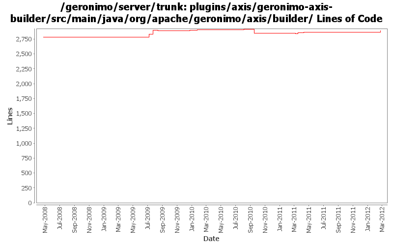

[root]/plugins/axis/geronimo-axis-builder/src/main/java/org/apache/geronimo/axis/builder

| Author | Changes | Lines of Code | Lines per Change |
|---|---|---|---|
| Totals | 56 (100.0%) | 575 (100.0%) | 10.2 |
| rickmcguire | 10 (17.9%) | 159 (27.7%) | 15.9 |
| gawor | 5 (8.9%) | 143 (24.9%) | 28.6 |
| xuhaihong | 11 (19.6%) | 130 (22.6%) | 11.8 |
| djencks | 17 (30.4%) | 106 (18.4%) | 6.2 |
| rwonly | 2 (3.6%) | 24 (4.2%) | 12.0 |
| genspring | 2 (3.6%) | 10 (1.7%) | 5.0 |
| jdillon | 9 (16.1%) | 3 (0.5%) | 0.3 |
GERONIMO-6283 Ignore JAX-WS webservices handlering in Axis module
22 lines of code changed in 1 file:
GERONIMO-5050 really use only one owb context for the whole ear, and combine all the module info into it
2 lines of code changed in 1 file:
GERONIMO-6058 Replace StringBuffer usage with StringBuilder
1 lines of code changed in 1 file:
GERONIMO-6022 Support use the @Resource(name="java:global/env/abc") for environment entry injection
5 lines of code changed in 1 file:
Initial enablement for ejb webservice
50 lines of code changed in 1 file:
Add NPE check for configurePOJO
35 lines of code changed in 1 file:
Fix NPE when deploying a non jaxrpc ejb module.
9 lines of code changed in 1 file:
GERONIMO-5845 java.lang.RuntimeException when using bin/deploy command to deploy an eba (Axis builder's findWebServices does not support WAB deployment)
23 lines of code changed in 1 file:
should not use ServiceRef type when create service
1 lines of code changed in 1 file:
Normalizing a service ref name twice will definitely throw a IllegalArgumentException.
1 lines of code changed in 1 file:
some cleanup on the axis plugin to get it compile cleanly
158 lines of code changed in 9 files:
some dependency tweaks to at last get the code attempting to compile
1 lines of code changed in 1 file:
GERONIMO-5066 Fix a lot of problems with jndi including wrong finders and inconsistent adding of injections
33 lines of code changed in 1 file:
GERONIMO-4918 port of dependency setup changes from 2.2
2 lines of code changed in 1 file:
XBEAN-148 use new xbean-bundleutils
1 lines of code changed in 1 file:
Make axis plugin compile and fix a typo error in geronimo-connector-builder-1.6
8 lines of code changed in 1 file:
GERONIMO-5057 Use those xmlbeans generated by JAVA EE 6 schema files
6 lines of code changed in 1 file:
GERONIMO-5030: Initial refactoring of some of the module deployment code to support deployment of Bundles. Also, implemented rfc66 extender that can actually deploy WABs with simple servlets and jsps.
3 lines of code changed in 1 file:
GERONIMO-5008 Create util methods for all the Geronimo components
2 lines of code changed in 1 file:
GERONIMO-5004 axis 1 osgi integration including test jetty server
60 lines of code changed in 9 files:
GERONIMO-4645 use jacc ejb ws auth for jetty6, simplify SOAPHandler interface
0 lines of code changed in 1 file:
configure security for jaxrpc ejb web services
62 lines of code changed in 1 file:
GERONIMO-4645 Make ejb ws security more jacc friendly, implement transport guarantees for jetty7 using jacc. See jira for more comments
2 lines of code changed in 1 file:
prefer openejb-jar.xml instead of geronimo-openejb.xml descriptor in ejb ws deployer and pass additional properties object to SoapHandlers
78 lines of code changed in 1 file:
GERONIMO-4553 Make web use of security realms depend on plugin visibility; make console expose the 'global' attribute for configuration (renamed from 'publish'). Also merges in geronimo-security changes from sandbox branches.
5 lines of code changed in 1 file:
GERONIMO-4633 extra semicolon in code Thanks Shawn for the patch!
1 lines of code changed in 3 files:
support for specifying a list of http methods that should be secured for ejb-based web services (GERONIMO-4015)
0 lines of code changed in 2 files:
GERONIMO-4258 clean up some naming constant usage
1 lines of code changed in 1 file:
More loggers back to static
3 lines of code changed in 3 files:
(GERONIMO-3985) Use SLF4J as the primary logging facade for Geronimo
0 lines of code changed in 6 files: